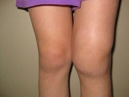
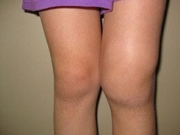
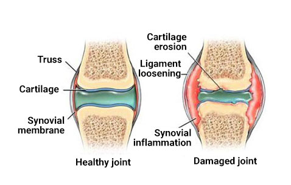

"Οι μέθοδοι της κοινής θεραπείας που χρησιμοποιούνται στην Ελλάδα είναι αναποτελεσματικές." Ένας διάσημος Ιάπωνας ρευματολόγος έδωσε μια ειλικρινή συνέντευξη σε μια ελληνική έκδοση.
Ο Δρ. Shigeaki Hinohara είναι ο επικεφαλής του παγκοσμίου φήμης Κέντρου Ρευματολογίας και Νευρολογίας του Τόκιο.
Υπάρχει μόνο μία αιτία ασθένειας των αρθρώσεων, αλλά αγνοείται πλήρως από Έλληνες γιατρούς.
Δρ. Shigeaki Hinohara: «Στην Ελλάδα, οι ασθένειες των αρθρώσεων εξακολουθούν να αντιμετωπίζονται με ξεπερασμένα και αναποτελεσματικά φάρμακα, που απαιτούν συνεχή χρήση καθ 'όλη τη διάρκεια της ζωής. Ενώ στην Ιαπωνία, οι ασθένειες των αρθρώσεων αντιμετωπίζονται τόσο εύκολα όσο ένα κρυολόγημα. "
Πέρυσι ο Shigeaki Hinohara ταξίδεψε στην Ελλάδα, για να μελετήσει τις εμπειρίες των Ελλήνων συναδέλφων του. Αυτό που είδε στην Ελλάδα, είπε, είναι αδύνατο να εξηγηθεί. Στη χώρα σας, σύμφωνα με τον Shigeaki, η ρευματολογία σταμάτησε στην ανάπτυξή της στο επίπεδο των μέσων του περασμένου αιώνα.
Αφού έδωσε συνέντευξη στην Ιαπωνία, ο Δρ. Shigeaki Hinohara έδωσε τη συγκατάθεσή του για συνέντευξη από την ελληνική έκδοση. Τι δεν άρεσε στον διάσημο γιατρό στην ελληνική ιατρική; Και γιατί λέει, ότι οι Έλληνες που πάσχουν από ασθένειες των αρθρώσεων, δεν μπορούν ποτέ να θεραπευτούν;
Μιλώντας σε Ιάπωνες δημοσιογράφους, είπατε ότι αυτό που είδατε στην Ελλάδα σας σόκαρε. Θα μπορούσατε να το σχολιάσετε αυτό;
Πρώτα απ 'όλα, θέλω να πω ότι μου αρέσει πολύ η Ελλάδα, ο πολιτισμός της και οι πολίτες της. Ωστόσο, η κατάσταση της ιατρικής σας, σοκάρει τους Ιάπωνες γιατρούς. Το φάρμακό σας, έχει καθυστερήσει τουλάχιστον 20 ή ίσως 30 χρόνια. Τουλάχιστον όταν πρόκειται για τη θεραπεία ασθενειών των αρθρώσεων και του μυοσκελετικού συστήματος. Μπορούμε να πούμε, ότι η ρευματολογία ως επιστήμη, δεν υπάρχει στην Ελλάδα.
Δείτε τι προσφέρουν οι γιατροί για τη θεραπεία των αρθρώσεων στην Ελλάδα: Viprosal, Ibuprofen, Voltaren \ Fastum gel, Diclofenac, Teraflex, Nurofen και άλλα παρόμοια φάρμακα.
Ωστόσο, αυτά τα φάρμακα ΔΕΝ ΘΕΡΑΠΕΥΟΥΝ ΤΙΣ ΑΡΘΡΩΣΕΙΣ, ανακουφίζουν μόνο τα συμπτώματα της ασθένειας: πόνο, φλεγμονή, πρήξιμο. Τώρα φανταστείτε τι συμβαίνει στο σώμα. Όταν παίρνετε ένα χάπι, εφαρμόζετε ένα αναισθητικό τζελ ή κάνετε μια ένεση, ο πόνος εξαφανίζεται. Αλλά μόλις το φάρμακο σταματήσει να λειτουργεί, ο πόνος επανέρχεται αμέσως.
Και ο πόνος είναι ένα σημαντικό σήμα που σηματοδοτεί μια παθολογική διαδικασία στην άρθρωση. Απλώς μειώνοντας τον πόνο, οι προσβεβλημένες αρθρώσεις δέχονται περισσότερο φόρτο (πίεση). Η διαδικασία καταστροφής επιταχύνεται 3-5 φορές και τελικά οδηγεί σε μη αναστρέψιμες αλλαγές, πλήρη ακινητοποίηση και αναπηρία.
Αυτή η μέθοδος ανακούφισης του πόνου στις αρθρώσεις, έχει να χρησιμοποιηθεί στην Ιαπωνία πάνω από 20 χρόνια. Τα παυσίπονα χρησιμοποιούνται μόνο σε ακραίες περιπτώσεις, πολύ σπάνια και με μεγάλη προσοχή. Στην Ιαπωνία, πωλούνται μόνο με ιατρική συνταγή και υπό αυστηρή ιατρική παρακολούθηση.
Οι λεγόμενοι "χονδροπροστατευτές" απαγορεύονται πλήρως, ως απομίμηση φαρμάκων και εντελώς αναποτελεσματικά (άχρηστα) φάρμακα.
Οι γιατροί και οι φαρμακοποιοί σας, απλώς βλάπτουν τους ανθρώπους! Είναι σαφές, ότι είναι πολύ πιο επικερδές, να πωλείται μια συνεχής θεραπεία για την εξάλειψη των συμπτωμάτων, σε υψηλή τιμή, από το να θεραπεύσετε την ασθένεια για πάντα, να θεραπεύσετε την προσβεβλημένη άρθρωση, αλλά αυτό είναι τρομερό!
 
Τι γίνεται με την θεραπεία των αρθρώσεων στην Ιαπωνία;
Όλοι οι Ιάπωνες γιατροί, ξεκινώντας από τους καθηγητές της ρευματολογίας έως απλούς οικογενειακούς γιατρούς και παραϊατρικούς, έχουν από καιρό καταλάβει, ότι είναι απαραίτητο να εξαλειφθούν όχι οι συνέπειες της ασθένειας, αλλά οι αιτίες της. Αυτό αποτελεί εγγύηση πλήρους, γρήγορης και ασφαλούς θεραπείας. Ποια είναι η κύρια αιτία τραυματισμών στις αρθρώσεις; Αυτή είναι η εναπόθεση κρυστάλλων στις αρθρώσεις λόγω μειωμένης κυκλοφορίας και αρθρικού υγρού.
Τα ουράτα είναι άλατα ουρικού οξέος, που προκαλούν ουρική αρθρίτιδα.
Τα οστεόφυτα, τα ασβεστοποιημένα άλατα, είναι η αιτία του υπόλοιπου 97% των παθήσεων των αρθρώσεων και της σπονδυλικής στήλης. Αρθρίτιδα και οστεοαρθρίτιδα, οστεοχόνδρωση, οστεοπόρωση, ρευματισμοί, θυλακίτιδα και ακόμη και υγρόμα. Όλες αυτές οι ασθένειες έχουν αιτία: την εναπόθεση των οστεοφύτων.
Τα άλατα, που καθίστανται στην επιφάνεια της άρθρωσης, δρουν σαν το γυαλόχαρτο να ακονίζει τους γύρω ιστούς - οστά και χόνδρους. Μεγαλώνοντας, οι κρύσταλλοι αλατιού αρχίζουν να τραυματίζουν τους μυϊκούς ιστούς, τους τένοντες, τα αιμοφόρα αγγεία και τα τριχοειδή αγγεία. Προκαλώντας φλεγμονή, λοίμωξη, πρήξιμο και σοβαρό πόνο.
Σε προχωρημένες περιπτώσεις, μεγάλες συσσωρεύσεις αλάτων, μπορούν εύκολα να σπάσουν μέρος οστού με μια απότομη κίνηση, η οποία θα οδηγήσει σε πλήρη αναπηρία και ακινητοποιεί μόνιμα την άρθρωση.
Μια πολύ επικίνδυνη παρανόηση είναι, ότι το ασβέστιο κάνει καλό στις αρθρώσεις. Ναι, το ασβέστιο κάνει καλό, αλλά μόνο στις υγιείς αρθρώσεις. Όταν οι αρθρώσεις έχουν τραυματιστεί ή πονάνε, αυτό σημαίνει ότι έχει ήδη σχηματιστεί ένα στρώμα οστεοφύτων και το ασβέστιο, εκτός από την ενίσχυση του οστικού ιστού, ενισχύει επίσης αυτά τα οστεοφυτικά άλατα, επιδεινώνοντας και επιταχύνοντας την ανάπτυξή τους.
Γι'αυτό οι Ιάπωνες ρευματολόγοι αποκαθιστούν πρώτα απ 'όλα την κυκλοφορία του αίματος στην προσβεβλημένη άρθρωση, προκειμένου να αφαιρέσουν τα άλατα που έχουν συσσωρευτεί όλα αυτά τα χρόνια. Αυτό, με τη σειρά του, αποκαθιστά την κανονική κυκλοφορία του αρθρικού υγρού και ξεκινά τη διαδικασία επιδιόρθωσης των ιστών στις αρθρώσεις.
Στην πραγματικότητα, οι ανθρώπινες αρθρώσεις είναι πολύ αναγεννητικές, μπορούν να αναγεννηθούν μόνες τους, όπως η ουρά μιας σαύρας. Απλώς χρειάζονται λίγη βοήθεια με αυτό - ξεφορτωθείτε τα άλατα που "κολλάνε" σε αυτά - και η διαδικασία θα προχωρήσει.
Αυτή η ουσία μπορεί να διεισδύσει σε μόρια αλατιού και να τα σπάσει από το εσωτερικό - ως αποτέλεσμα, η επιφάνεια των αρθρώσεων καθαρίζεται, η ροή του αίματος και η κυκλοφορία του αρθρικού υγρού αποκαθίστανται. ΓΙΑ ΠΑΝΤΑ! Πιο συγκεκριμένα, έως ότου τα άλατα συσσωρευτούν ξανά (αλλά αυτό θα διαρκέσει αρκετές δεκαετίες). Δεν χρειάζεται πλέον ΣΥΝΕΧΩΣ να λαμβάνεται φάρμακα για την ανακούφιση του πόνου και της φλεγμονής. Μην φοβάστε, ότι μια μέρα η άρθρωση θα «παραλύσει» για πάντα, αφήνοντάς σας σε ακινησία και απαιτώντας προσθετική. Οι άνθρωποι γίνονται εντελώς υγιείς για δεκαετίες.
Όταν είδα τις ιατρικές στατιστικές της Ελλάδας, φοβήθηκα. Γνωρίζετε ποια είναι η πιο κοινή αιτία της αναπηρίας στην Ελλάδα; Δεν είναι ο καρκίνος, το AIDS ή ο διαβήτης, είναι η οστεοαρθρίτιδα! Η οστεοαρθρίτιδα, στην Ιαπωνία, αντιμετωπίζεται σε 2 ή 3 εβδομάδες, με ένα αρκετά φθηνό φάρμακο, στην Ελλάδα οδηγεί σε αναπηρία!
Σήμερα στην Ιαπωνία, οι ασθένειες των αρθρώσεων, δεν θεωρούνται επικίνδυνες παθολογίες, εκτός εάν, φυσικά, πρόκειται για σοβαρούς τραυματισμούς: κατάγματα, ρωγμές κ.λπ. Ο πόνος και η φλεγμονή στις αρθρώσεις δείχνουν μόνο, ότι είναι "Βρώμικα" απο τις συσσωρεύσεις των αλάτων και είναι καιρός να τις καθαρίσετε. Μετά από μια μηνιαία διαδικασία «καθαρισμού», οι αρθρώσεις επανέρχονται στο φυσιολογικό και τέτοιου είδους προβλήματα μπορούν να ξεχαστούν για μια ολόκληρη δεκαετία.
Οι ασθένειες των αρθρώσεων, τις οποίες στην Ελλάδα προσπαθούν να «θεραπεύσουν» χωριστά, στην Ιαπωνία εδώ και πολύ μεγάλο χρονικό διάστημα, τα έχουν συνδέσει σε μία ασθένεια «Αρθρώσεις Αλατιού» (εναπόθεση αλατιού στις αρθρώσεις). Αυτή η ασθένεια περιλαμβάνει:
- Ουρική αρθρίτιδα
- Αρθρίτιδα
- Οστεοαρθρίτιδα
- Οστεοχόνδρωση
- Ρευματισμός
- Οστεοπόρωση
- Θυλακίτιδα
- Συνοβίτιδα
- Υγρόμα
Αυτή είναι μια πολύ σύντομη λίστα, αλλά οι άλλες ασθένειες είναι μόνο ένα υποείδος αυτών των εννέα σημαντικών παθολογιών. Για παράδειγμα, η συνάρθρωση είναι ένα υποείδος της οστεοαρθρίτιδας κ.λπ.
Και αυτός μεγάλος κατάλογος ασθενειών, μπορεί να θεραπευθεί με έναν πολύ απλό καθαρισμό των αρθρώσεων. Είναι απολύτως ασφαλές, δεν απαιτεί καν ιατρική φροντίδα και πραγματοποιείται στο σπίτι.
Από όσο γνωρίζουμε, το δεν πωλείται στα ελληνικά φαρμακεία.
Σίγουρα οχι. Οι Έλληνες γιατροί, προτιμούν να συνταγογραφούν μεγάλες ποσότητες παυσίπονων και χονδροπροστατευτικών στον πληθυσμό τους, αντί να ασκούν μια σωστή θεραπεία.
Χωρίς αμφιβολία, οι Έλληνες ρευματολόγοι, τουλάχιστον όσοι ενδιαφέρονται για προοδευτικές θεραπείες, γνωρίζουν την κρέμα και τις δυνατότητές της για ανάρρωση. Αλλά δεν διακινδυνεύουν να συνταγογραφήσουν φάρμακο, που δεν περιλαμβάνεται στη λίστα του Υπουργείου Υγείας.
Από όσο γνωρίζω, ο κατασκευαστής της κρέμας , ήθελε να εισέλθει στην ελληνική αγορά. Αλλά δεν τον άφησαν να το κάνει, επινοώντας εκατοντάδες εμπόδια (η γραφειοκρατία στην Ελλάδα δεν γνωρίζει όρια). Αυτό είναι κατανοητό: εάν αυτή η θεραπεία εμφανιστεί στα φαρμακεία, τα ελληνικά φαρμακεία θα υποστούν κολοσσιαίες απώλειες. Η φαρμακολογία είναι μια επιχείρηση σήμερα! Ακόμα και στην Ιαπωνία. Αλλά στην Ιαπωνία, η φαρμακευτική επιχείρηση ελέγχεται από το κράτος και δεν θα κρίνω το τι συμβαίνει στην Ελλάδα, εσείς το γνωρίζετε καλύτερα.
Τι συμβουλή θα δίνατε σε Έλληνες με προσβεβλημένες αρθρώσεις;
Οι απλοί άνθρωποι, ειδικά οι άνθρωποι άνω των 50 ετών, υποφέρουν περισσότερο από κακή περίθαλψη και μεταχείριση, σχετικά με άλλους ανθρώπους. Δεν φταίτε εσείς, έτσι λειτουργεί το σύστημα της υγειονομικής περίθαλψης.
Αλλά, ευτυχώς, υπάρχει μια διέξοδος. Έχει δημιουργηθεί μια ειδική επίσημη ιστοσελίδα, όπου οποιοσδήποτε κάτοικος της Ελλάδας, μπορεί να παραγγείλει την κρέμα σχεδόν δωρεάν!
Διανείμουμε την κρέμα εδώ και τρεις μήνες. Αυτή η ευκαιρία έχει ήδη χρησιμοποιηθεί από αρκετές χιλιάδες Έλληνες. Ζητήσαμε από όλους, όσοι χρησιμοποίησαν την κρέμα , να αξιολογήσουν την αποτελεσματικότητα του προϊόντος σε κλίμακα από το 1 έως το 10. Μέχρι στιγμής, περισσότεροι από 3.000 άνθρωποι έχουν συμμετάσχει στην έρευνα και η μέση βαθμολογία του προϊόντος είναι 9,97 στα 10.
Όπως μπορείτε να δείτε, η κρέμα βοήθησε στην επαναφορά της κινητικότητας και στην ανακούφιση του πόνου σε χιλιάδες Έλληνες, σχεδόν δωρεάν! Μπορείτε επίσης και εσείς να είστε ανάμεσά τους.
Πόσο θα διαρκέσει η προτιμησιακή διανομή της φανταστικής κρέμας ;
Μέχρι τη λήξη της επισημασμένης παρτίδας. Αλλά θέλω να σας προειδοποιήσω, ότι απέμειναν λίγα τεμάχια. Κάθε μέρα υπάρχουν όλο και περισσότερες παραγγελίες. Η μέθοδος από στόμα σε στόμα λειτουργεί, οι άνθρωποι διαβιβάζουν πληροφορίες ο ένας στον άλλον, συμβουλεύουν φίλους, παραγγέλνουν την κρέμα για τους συγγενείς. Δεν περιμέναμε ότι οι πληροφορίες σχετικά με την κρέμα θα εξαπλωθούν τόσο γρήγορα σε όλη την Ελλάδα.
Συνιστώ σε κάθε άνθρωπο με προβλήματα στις αρθρώσεις, να επισκεφτεί τον ιστότοπο, για να αποκτήσει τη σε μειωμένη τιμή. Και να θυμάστε ότι η υγεία μας είναι το πιο σημαντικό και πολύτιμο πράγμα που έχουμε.
Μάρθα Χαριτωνίδη
Δρ. Hinohara, σας ευχαριστώ πολύ για αυτό το προϊόν. Ψάχνω κάτι τέτοιο εδώ και πολύ καιρό. Ανυπομονώ πραγματικά για την παραγγελία μου! Ευχαριστώ!
Πριν από μια ώρα
Μαγδαληνή Κυριακού
Χάρη σε αυτήν την κρέμα, έχω θεραπεύσει την οστεοαρθρίτιδα μου! Ευχαριστώ πολύ!
Πριν από μια ώρα
Κατερίνα Δημητρίου
Είμαι κατενθουσιασμένη! Είναι ένα αποτελεσματικό προϊόν για προβλήματα των αρθρώσεων! Οι αγκώνες και τα γόνατά μου, σταμάτησαν να πονάνε.
Πριν από μια ώρα
Ανδρέας Φιλοκτήτης
Ευχαριστώ γι' αυτήν την κρέμα, Δρ. Hinohara! Έσωσε όχι μόνο τη γυναίκα μου, αλλά και πολλούς ανθρώπους στη χώρα μας. Αποφάσισα να δοκιμάσω τη στην σπονδυλική στήλη. Έχω οστεοχόνδρωση και με βοήθησε πολύ. Νομίζω ότι όλα θα πάνε καλά τώρα!
Πριν από μια ώρα
Shigeaki Hinohara
Ανδρέα, μην ανησυχείτε και συνεχίστε να χρησιμοποιείτε τη . Μην ξεχνάτε να ακολουθείτε τις οδηγίες της κρέμας.
Με εκτίμηση, Shigeaki.
Πριν από μια ώρα
Κώστας Σαρλής
Μπορεί κάποιος να με βοηθήσει; Η πλάτη μου πονάει τρομερά. Δεν ξέρω τι να κάνω. Δοκίμασα όλα τα είδη χαπιών, χρησιμοποίησα διάφορα τζελ, αλλά τίποτα δεν βοηθά :(
Πριν από μια ώρα
Ευγένιος Παπαδόπουλος
Κώστα, αγοράστε στον εαυτό σας την κρέμα και δεν θα το μετανιώσετε. Είχα παρόμοια προβλήματα στο σημείο, που δεν μπορούσα ούτε να περπατήσω. Ευτυχώς η γυναίκα μου βρήκε αυτήν την κρέμα και μου την έδωσε. Την αγόρασα πριν από 3 μήνες στην αρχική τιμή (νομίζω, όχι, τόσο υψηλή). Και τώρα, δεν έχω προβλήματα με τις αρθρώσεις. Μπορώ να κινούμαι κανονικά. Παραγγείλετε τώρα, που ισχύει η έκπτωση 50%.
Πριν από μια ώρα
Ευρυδίκη
Πως να παραγγείλω την κρέμα ;
Πριν από μια ώρα
Παύλος
Ευρυδίκη, εδώ είναι ένας σύνδεσμος προς τον επίσημο ιστότοπο ή εδώ, αλλά σας συμβουλεύω να βιαστείτε, αν θέλετε να αγοράσετε με την έκπτωση 50%. Η κρέμα με βοήθησε πολύ.
Πριν από μια ώρα
Ευρυδίκη
Ευχαριστώ, Παύλο. Μόλις παρήγγειλα. Ποιος είναι ο χρόνος της παράδοσης;
Πριν από μια ώρα
Παύλος
Ευρυδίκη, περίπου 1-2 μέρες :)
Πριν από μια ώρα
Φαίδρα Καποπούλου
Παρήγγειλα την κρέμα πριν από δύο μήνες, για την αδερφή μου, που έπασχε από την αρθρίτιδα για μεγάλο χρονικό διάστημα. Ανάρρωσε τελείως.
Πριν από μια ώρα
Μανώλης Σούτσου
Φαίδρα, είναι πραγματικά τόσο αποτελεσματική; Ίσως πρέπει να παραγγείλω και εγώ. Έτσι κι αλλιώς, υπάρχει η έκπτωση 50% τώρα, σωστά;
Πριν από μια ώρα
Στέφανος Μάνος
Έχω ακούσει και εγώ κάποια πράγματα για αυτήν την κρέμα. Μου την πρότειναν και οι φίλοι μου. Τα πόδια μου πονάνε εδώ και δύο χρόνια. Μερικές φορές ο πόνος είναι απλώς αφόρητος και οι γιατροί δεν ξέρουν πώς να με βοηθήσουν. Αποφάσισα να παραγγείλω την , θα προσπαθήσω, ελπίζω να με βοηθήσει.
Πριν από μια ώρα
Παναγιώτης Βούβαλος
Φαίνεται, ότι πολλοί άνθρωποι έχουν προβλήματα στις αρθρώσεις. Πριν από ένα μήνα, είδα μια διαφήμιση για την και με έσωσε από την οστεοχόνδρωση γρηγορότερα από πολλά άλλα προϊόντα.
Πριν από μια ώρα
Αλέξανδρος
Ξέρει κανείς εάν βοηθά πραγματικά;
Πριν από μια ώρα
Στέλλα Παπανδρέου
Αλέξανδρε, είμαι σίγουρη. Είναι αποτελεσματική και δεν έχει παρενέργειες. Γι'αυτό βιαστείτε και παραγγείλετε! Η με βοήθησε να απαλλαγώ εντελώς από τα προβλήματα, που είχα στην πλάτη μου.
Πριν από μια ώρα
Κωνσταντίνος Κανέλλης
Ευχαριστώ, η με βοήθησε πολύ! Την αγόρασα από τον επίσημο ιστότοπο! Μην αναβάλλετε τη θεραπεία για μετά. Καλύτερα να το κάνετε τώρα, παρά να το μετανιώσετε αργότερα.
Πριν από μια ώρα
Ελένη Λαμπράκη
Ευχαριστώ Δρ. Hinohara. Αν δεν ήσασταν εσείς, δεν θα πίστευα στην αποτελεσματικότητα της ! Ζω με τον σύζυγό μου 5 χρόνια, ο οποίος είχε πρόβλημα με τις αρθρώσεις του γόνατος. Υπέφερε τρομερά και τώρα τρέχει σαν να είναι και πάλι 18 ετών.
Η παραγγελία ήρθε πολύ γρήγορα.
Πριν από μια ώρα
Shigeaki Hinohara
Ελένη, χαίρομαι. Πόσο καιρό χρειάστηκε για να ανακάμψει;
Με εκτίμηση, Shigeaki.
Πριν από μια ώρα
Ελένη Λαμπράκη
Shigeaki, του πήρε περίπου ένα μήνα για να ανακάμψει. Τώρα μπορεί να κινηθεί ελεύθερα και δεν παραπονιέται για το πόνο όπως πριν. Είμαι πολύ χαρούμενη γι 'αυτόν.
Πριν από μια ώρα
Shigeaki Hinohara
Έξοχα. Ευχαριστώ, Ελένη.
Με εκτίμηση, Shigeaki.
Πριν από μια ώρα
Αναστασία Φουστέρη
Το αποτέλεσμα ξεπέρασε όλες τις προσδοκίες μου. Η ισχιαλγία εξαφανίστηκε για πάντα! Παρήγγειλα την κρέμα και για τους φίλους μου. Ο ένας έχει πόνο στην πλάτη, ο άλλος έχει πόνο στην άρθρωση του αγκώνα.
Πριν από 57 λεπτά
Ντίνος Γ.
Μόλις συμπλήρωσα την φόρμα στον ιστότοπό σας ...
Εξεπλάγην όταν ανακάλυψα ότι πωλούν την κρέμα με έκπτωση 50%!
Άφησα τον αριθμό τηλεφώνου μου στον ιστότοπό σας και ο εκπρόσωπος μου τηλεφώνησε μέσα σε λίγα λεπτά, για να επιβεβαιώσω την παραγγελία. Από τώρα και στο εξής θα ζήσω χωρίς πόνο και θα απολαύσω το περπάτημα ξανά :)
Πριν από 55 λεπτά
Χριστίνα Τσάτσου
Την παρήγγειλα για τη μαμά. Η αρθρίτιδα την βασανίζει τρομερά εδώ και αρκετά χρόνια. Κάθε φορά που έβρεχε ή άλλαζε ο καιρός, ο πόνος σχεδόν την σκότωνε. Η τη βοήθησε σε μερικές εβδομάδες. Δεν μπορούσα καν να φανταστώ, ότι αυτό είναι δυνατό.
Πριν από 53 λεπτά
Βασιλική Φ.
Ένας φίλος μας πουλάει αυτήν την κρέμα στο φαρμακείο του, σχεδόν 85 ευρώ, οπότε αποφασίσαμε να μην την αγοράσουμε από αυτόν. Όταν είδα αυτήν την προσφορά, αποφάσισα αμέσως να παραγγείλω. Είμαστε συνταξιούχοι και δεν έχουμε πολλά χρήματα. Το γόνατό μου δεν πονάει πλέον, οπότε τώρα μπορώ να περπατήσω χωρίς προβλήματα. Ευχαριστώ!
Πριν από 48 λεπτά
Shigeaki Hinohara
Βασιλική Φ., είναι αλήθεια ότι αυτή η κρέμα πωλείται στα φαρμακεία. Είναι κρίμα, που με αυτόν τον τρόπο κερδίζουν χρήματα εις βάρος των ασθενών. Θα αρχίσουμε να παρακολουθούμε τις τοποθεσίες όπου στέλνουμε το προϊόν μας.
Με εκτίμηση, Shigeaki.
Πριν από 42 λεπτά
Σοφία Α.
Η με βοήθησε να απαλλαγώ από την ουρική αρθρίτιδα σε μία μόνο θεραπεία, και τώρα είναι πάντα στη διάθεσή μου για κάθε περίπτωση.
Πριν από 40 λεπτά
Γιώργος Λ.
Παρήγγειλα επίσης την κρέμα στον ιστότοπό σας. Και με βοήθησε πολύ. Αν έχετε παρόμοια προβλήματα, πιστέψτε με, δεν υπάρχει τίποτα καλύτερο. Επιπλέον, η παράδοση είναι πολύ γρήγορη. Η παραγγελία μου ήρθε σε μόλις 2 ημέρες.
Πριν από 39 λεπτά
Shigeaki Hinohara
Ευχαριστώ, Γιώργο Λ.! Προσπαθούμε να παρέχουμε την στους πελάτες μας το συντομότερο δυνατό, ώστε να μπορούν να ξεκινήσουν αμέσως τη θεραπεία.
Με εκτίμηση, Shigeaki.
Πριν από 35 λεπτά
Ευγενία Νικολάου
Διάβασα το άρθρο και αποφάσισα να παραγγείλω αυτό το προϊόν αμέσως. Εμπνεύστηκα πολύ από την ιστορία του Shigeaki Hinohara. Το γεγονός είναι ότι τα συνηθισμένα φάρμακα δεν με βοηθούσαν για πολύ. Οι γιατροί, μου είπαν ότι η αρθρίτιδα είναι δύσκολο να θεραπευτεί. Τώρα θέλω να σας πω για τα αποτελέσματα της θεραπείας. Η ήρθε πολύ γρήγορα. Ένιωσα τόσο ανακουφισμένη μετά από μία μόνο εφαρμογή, που αποφάσισα να μοιραστώ τη χαρά μου. Είμαι πολύ χαρούμενη, που μπορώ να ζήσω ξανά μια φυσιολογική ζωή!
Πριν από 31 λεπτά
Νίκος Κύρκος
Μπορεί κάποιος να μου πει, πού μπορώ να πάρω αυτήν την κρέμα; Δεν την έχω δει στα φαρμακεία και φοβάμαι λίγο να αγοράσω στο Διαδίκτυο. Δεν θέλω να παραγγείλω κάποια απομίμηση ή κάτι ψευδή, γιατί καταλαβαίνω ότι θα είναι άχρηστο προϊόν και πεταμένα λεφτά.
Πριν από 27 λεπτά
Shigeaki Hinohara
Επαναλαμβάνω για άλλη μια φορά ότι την κρέμα , μπορείτε να παραγγείλετε ΜΟΝΟ στον επίσημο ιστότοπό μας. Για να αποφύγετε τυχόν παρεξηγήσεις, απλώς κάντε κλικ στο κουμπί συνδέσμου ακριβώς παρακάτω. Υπενθύμιση, το έχει έκπτωση 50%, αλλά αυτή η προσφορά δεν θα διαρκέσει για πολύ, οπότε βιαστείτε!
Προσοχή στις απομιμήσεις.
Με εκτίμηση, Shigeaki.
Πριν από 15 λεπτά